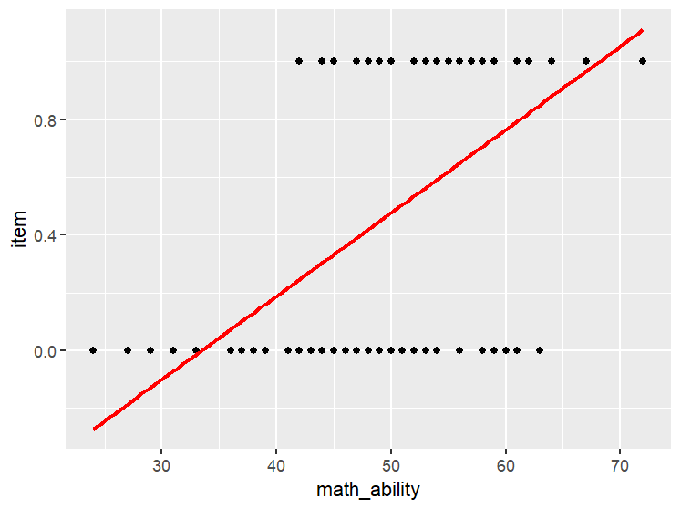
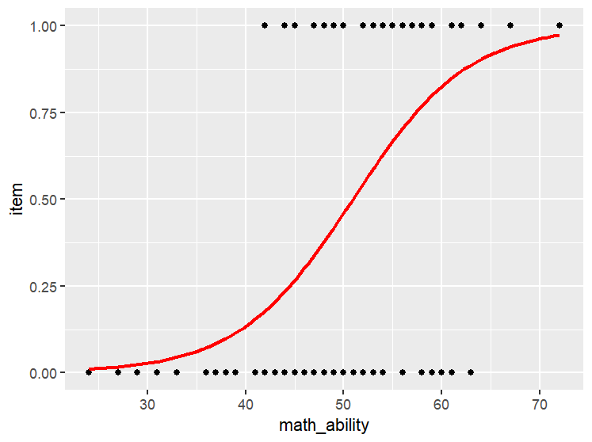

14 Logistic Regression
14.1 Learning Objectives
Know what a binary logistic regression is, and what kinds of research questions it can address.
Know the ways that a logistic regression differs from a regular linear regression.
Know the assumptions of a logistic regression, and how violations might affect your results.
Know how to interpret the results of a logistic regression.
Section 13.1 has hopefully demonstrated that regressions can be very powerful tools for analyzing multiple predictors on a continuous outcome. However, you can certainly imagine many contexts in which our outcome is binary – dead/alive, successful/unsuccessful, pass/fail, right/wrong. However, a simple graph shows that when we try to map a continuous predictor to a binary outcome, a regression line is not a great fit!

This is where a procedure known as logistic regression comes into play. Logistic regression fits an S-shaped curve (sometimes known as an ogive curve or a sigmoidal curve) to the data. As you can see, this is a better approximation of what’s going on in the data:

At the leftmost side of this S-curve, the line is very close to zero, but it never quite reaches zero. In the middle of the curve, we see a fairly steep curvy line, and that leads to the rightmost side where our line creeps closer and closer to 1, but never quite reaches it. In plain language, when we’re discussing human behavior, we can’t ever really say there is a perfect zero chance someone will do something, nor can we say there’s 100% chance they will do something. Probabilities can approach these values, but never quite reach them. That probability is what we are trying to model with a logistic regression.
Logistic regression can be a bit mathematically intimidating, but it is a very helpful procedure that shows up in a lot of contexts. One good example we discuss is the issue of whether someone gets an item correct or incorrect on an exam1. In this chapter, we’ll talk a lot about whether an “event” happens. Usually in data sets, we use a 0 and 1 coding to establish our binary outcome.
Take, for example, the data set test item, where we have information about students from two different classes, their math ability on a standardized test, whether they are an international student, and whether they got a particular item correct on an exam. The item is coded as 1 if they get the question right, so we can think of the “event” we’re interested in as “answers the question correctly”:
| id | class | math_ability | international | item |
|---|---|---|---|---|
| 1 | 1 | 52 | 1 | 1 |
| 2 | 2 | 59 | 1 | 1 |
| 3 | 1 | 57 | 1 | 1 |
| 4 | 1 | 47 | 0 | 0 |
| … | … | … | … | … |
Imagine that this test item is a word problem intended to assess math ability. So, maybe our first question is whether a student’s math ability assessed with another test predicts whether a student will get this item right or wrong. A logistic regression is a good way to answer this question, but first, we need to touch on the topic of probability, odds, and logit.
14.1.1 Probability, Odds and Logit
Hopefully at this point, you are getting a little more comfortable with the concept of probability. Probability is all about the likelihood of something happening based on the total of events. If we grab a table way back from Section 11.3 where we looked at the association of violent media and aggression:
| Aggression | No Aggression | TOTAL | |
|---|---|---|---|
| Exposed to Violent Media | 90 | 10 | 100 |
| Not Exposed to Violent Media | 60 | 40 | 100 |
| TOTAL | 150 | 50 | 200 |
As you learned in Section 4.1 , we can calculate the probability of an event by looking at the event compared to the total. So, if we want to know the probability of aggression among children exposed to violent media, we calculate:
\(p(Aggression|Exposed) =\frac{90}{100}=.90\)
However, odds are different than probabilities. Odds are all about the comparison between something happening versus it not happening (rather than the total). This is calculated using probability:
\(odds=\frac{p}{1-p}\)
Note how the denominator is different here – Instead of using the total as our denominator, we’re using the probability of the event not happening. So, for our example, the odds that a participant will be aggressive given that they are exposed to violent media is:
\(\frac{90}{10}=9\).0
As you can see, whereas probabilities are squeezed into a limited range (they can only be between .00 and 1.00) odds can range from 0 to infinity. When an event is quite common in a group, the odds can be quite large.
It will also be helpful to talk about risk ratios and odds ratios. These are essentially effect sizes for probabilities and odds. To calculate the risk ratio (also known as relative risk) of a child being aggressive when exposed to violent media, I take a ratio of the two probabilities (that is, the probability of aggression given a child is exposed to violent media, and the probability of aggression if a child is not exposed to violent media:
\(p(Aggression|Exposed)= \frac{90}{100}=.90\)
\(p(Aggression|Not\:Exposed)=\frac{60}{100}=.60\)
\(RR=\frac{.90}{.60}=1.50\)
Practically speaking, I can state “Children with exposure to violent media are 1.50 times more likely to show aggression than those who are not exposed to violent media.”
The odds ratio works the same way, except we use odds instead of probabilities for the comparison:
\(odds_{exposed}=\frac{.90}{.10}=9.0\)
\(odds_{not\:exposed}=\frac{.60}{.40}=1.5\)
\(OR=\frac{9.0}{1.5}=6.0\)
Here, I can state “The odds of aggression among children who are exposed to violent media are 6 times the odds of children not exposed to violent media.” Note that we have to say “odds” here – not likelihood or probability! This also shows that when a certain outcome is common, odds and odds ratios are larger than probabilities and risk ratios, so it can sometimes mislead people into thinking an effect is larger than it actually is.
OK, I need to add one more wrinkle to this discussion before we dive into logistic regression, and that is something known as a logit. This sometimes is a little difficult for students to absorb, because we don’t deal with logarithms often so it’s easy to forget how they work.
You know how we have certain math procedures that are opposites? Like addition and subtraction, or like multiplication and division – these procedures “undo” each other. Logarithms are basically this except for exponents. So, if:
\(5^3=125\)
then
\(log_5(125)=3\)
The log returns the exponent we’d need to take the base number (5) and get it to equal the power (125). One specific type of log is the natural log (ln), where the base number is \(e\) (roughly equal to 2.718… don’t worry too much about what e is, it has to do with how numbers compound over time). The logit, is the natural logarithm of the odds, which we calculate like this:
\(Logit(Y) = ln(odds)\)
So for our example, if we need to get the logit of our odds, we would calculate:
\(logit(9) = ln(9.0)\approx2.20\)
I admit that this can be a bit of a mindbender, so why are we doing this to ourselves?? The answer is twofold:
Using the logit essentially takes our curvy S-curve and maps it onto a regular line, which makes it a little easier for us to interpret. More on this in a little bit!
Using the logit also helps move our probabilities and odds into a more symmetrical scale, which allows us to understand direction and magnitude more clearly. The table below translates different probabilities into odds and odds ratios. You’ll see that the logit rescales our values into something that has zero as its midpoint, and gives positive and negative values meaning.
| Probability | Odds | Logit | Interpretation |
|---|---|---|---|
| .01 | .01 | -4.59 | Event is unlikely to occur |
| .50 | 1 | 0 | Event is equally likely to occur versus not occur |
| .99 | 99 | +4.59 | Event is very likely to occur |
I personally find looking at the probability of .50 helpful here – if we flip a coin, we have a 50% chance of getting tails. We have odds of 1 (sometimes known as even odds or 1:1). And we have a logit of zero. All of these values mean the same thing – the likelihood of heads and tails are equal. We are just re-translating that information to a different scale. It’s a little complicated, but very useful for logistic regression.
14.1.2 Conducting a simple Logistic Regression
Back to the research question at hand: “Does a student’s math score predict whether they will get this item correct?” Conducting a logistic regression allows us to fit an S-curve to the data and provides us with some estimates of how likely it is a student will answer the item correctly, given their score on the math exam. There are several pieces of information that can be very helpful in exploring this question. First, I find it very helpful to look at some contingency tables, which help us understand how our model can improve our accuracy.
First, it’s very helpful to start with a baseline measure of how accurate we can be without using a predictor. When we had a continuous outcome, we would just use the average as our most basic model. However, with a binary outcome, this won’t work all that well – instead, what we do is we take the most common outcome, and assume this occurs for everyone. If we do that, how accurate are we?
Here are the results we should get from our data:
| Observed Values | Predicted Values | |
|---|---|---|
| Incorrect answer | Correct answer | |
| Incorrect answer | 54 | 0 |
| Correct answer | 46 | 0 |
In the case of the test item data, we can see that out of 100 participants, 54 participants answered the question incorrectly. So, if we went ahead and assumed that nobody answered the question correctly, we would only be right 54 out of 100 times, so we’d have 54% accuracy. Not great! But this is good news for us – this basic model is pretty lousy, so we have lots of room for improvement. If we had 90% of people answering the item incorrectly, just guessing that everyone got it wrong would mean we’d be right 90% of the time, and it would be difficult to improve on that accuracy.
Next, we can use our statistical program to use our predictor to predict whether people get the answer right or wrong. Remember in Section 13.1 when we could use B values in a regression to provide a fitted value (i.e. where the point would be on our best fit line)? Our statistical program is doing basically the same thing here, except it’s calculating a probability and using that to guess whether they got the answer right – if the probability is over 50%, it guesses that they got the answer right, and if it’s below 50%, it guesses that they got it wrong. We can then use those fitted values to see if our accuracy improves.
Here are the results we should get from our data:
| Observed Values | Predicted Values | |
|---|---|---|
| Incorrect answer | Correct answer | |
| Incorrect answer | 40 | 14 |
| Correct answer | 13 | 33 |
Using information from students’ math scores, we can see that our model accurately predicts incorrect answers in 73 cases, and accurately predicts correct answers in 33 cases. Our model isn’t perfect – it made an inaccurate prediction in 27 cases, but this means we have 73% accuracy, which is much better than our initial accuracy of 54%. So, in terms of practical implications, it seems like our model is useful!
We also have some values known as pseudo-R squares that function mostly like a typical \(R^2\) – one of the better statistics for this is known as the Nagelkerke R square (or some programs call it the Cragg and Uhler R square… it’s the same thing). In our example, we find Nagelkerke R square is .39, so about 39% of the differences in whether students get the question right is explained by their math score.
If I’m trying to explain logistic regression to laypeople, this is usually where I stop, because from here on out, things get pretty technical. Unfortunately for you, I consider you to be a technical audience, so we’re going to dig into the results a little more. In most programs, you’ll get a table that might look something like this:

One useful value we get from most programs is something known as a Wald value2. This is a type of chi-square value, and this is the value we typically use to determine whether the predictor’s influence is significant. In research, Wald values are often reported, along with their respective p-value.
Just like with a regular regression, we also get an unstandardized coefficient (i.e. a B-value). But remember, our model isn’t linear, it’s an S-curve! So, we can’t treat these values the same way as we do in a normal regression. Back when we were doing a linear regression, we were able to predict someone’s score by using this equation:
\(\hat{y}=b_0+b_1(x)\)
But, there’s an important difference in logistic regression! We can still input a y-intercept and a slope, but the outcome is no longer someone’s score. Instead, it is the logit of an event happening:
\(logit=b_0+b_1(x)\)
Let’s walk through an example to understand how this works. Imagine that we have a student who has earned a score of 81 on the math test. We can input that score into this equation to figure out the logit of them getting that item correct:
\(logit=b_0+b_1(x)=-8.71+.17(81)=5.06\)
So, if someone has a score of 81 on the math test, the logit of them getting this item correct is 5.06. If we have someone with a point higher on the test, an 82, we know their logit increases by .17 (remember, one reason we use logit is to put our data on a straight line, so the logit increases in a linear way).
I don’t know about you, but I would prefer not to work in logits because they are confusing and hard to explain. Instead, I’d prefer to talk about odds or probability. The good news is that it’s pretty easy to calculate the odds – we just have to “exponentiate” this value:
\(e^{(b_0+b_1(x))}\)
Going back to our example, if we want to know the odds of someone getting this question right if they have a math score of 81, we take \(e\) to the 5.06 power:
\(e^{5.06}\approx157.59\)
This means this person’s odds of getting the item right are over 157 to one – in other words, it seems reasonable to predict they will get the item correct. If you prefer probability instead of odds, that’s easy enough to convert:
\(probability=\frac{odds}{1+odds}\)
\(probability=\frac{157.59}{158.59}\approx .994\)
The probability that this person will get that item correct are very high. Again, this value will never quite reach 100%, but it can get very close. If I were going to make a bet, I’d feel very comfortable betting that this person would get this test item correct.
Odds and probability are really helpful for explaining how we can predict an outcome given a value on the predictor. However, one downside here is that once we move away from logits, we are back to dealing with a curvilinear relationship. So we can no longer say that a one point change on our predictor leads to a certain change in the odds or the probability of an outcome. If you look at the red line on Figure 14.2, the line is steep in the middle, but flattens out at the ends. This means that for a one-point change in math ability, the probability changes a lot when a student’s math ability is between 40 and 60. When it is below 30 or above 70, the probability changes very little.
The main point here is that just like with a linear regression, those B values are very helpful for estimating what someone’s outcome is likely to be, but we don’t tend to report them much in reports or articles. We generally stick to the Wald value, or the odds ratio, which I’ll cover next.
Most programs will provide you with an odds ratio (OR), sometimes labeled as Exp(B). This value is just the exponentiated slope in our equation ( \(e^{\:.17}\approx 1.19\) ). This tells us for a one point change in our predictor variable, how many times higher the odds are the event will happen. So this means that if a student is one point higher on their math test, the odds they will get this question correct go up by 1.19. And remember that because we’re talking about odds, the “neutral point” for the odds ratio is a 1. Here, we see this value is a bit above 1, so this means that as math scores go up, the odds of getting this question right also increase. Odds ratios can be a little confusing when they are new to you, but researchers who deal with a lot of binary outcomes are used to seeing them and understanding them. For example, topics around healthcare and health behavior have a lot of binary outcomes, so those types of journals often have lists of odds ratios in their tables.
14.1.3 Multiple Logistic Regression
Just like with a standard linear regression, the beauty of logistic regression is that it’s quite flexible, so we can use it with multiple variables, and with multiple types of variables (e.g., continuous, dichotomous). We can also do things like hierarchical or exploratory regression. I’ll leave aside the hierarchical and exploratory pieces, but I do think walking through a multiple logistic regression can help solidify what you are learning in this chapter.
Let’s return to the test item data set. Let’s redo our logistic regression, but let’s add the two additional predictors in – which class a participant is in, and whether or not they are international students. When I run a logistic regression, here is the output I see:
| Observed Values | Predicted Values | |
|---|---|---|
| Incorrect answer | Correct answer | |
| Incorrect answer | 47 | 7 |
| Correct answer | 7 | 39 |
| B | SE | Wald | df | Sig. | OR | |
|---|---|---|---|---|---|---|
| class | .71 | .74 | .92 | 1 | .34 | 2.04 |
| math_ability | .27 | .07 | 15.20 | 1 | <.001 | 1.31 |
| international | -4.14 | .88 | 22.27 | 1 | <.001 | .016 |
| constant | -12.89 | 4.34 | 15.42 | 1 | <.001 | .000 |
| \(R^2\) | .73 |
Let’s start with the easier findings. First, we can see from the significance values that class doesn’t appear to predict whether someone will answer this item correctly, but math ability and international status do. We can also see from our contingency table that we have continued to improve our predictions – with no predictors, we know that we’d only get it right about 54% of the time. With all three predictors, that value jumps up to 86%, so we also are going to be more accurate in making guesses about our participants outcomes if we have these predictors in our model. So, this is all good news for us so far!
The odds ratios also tell us that as these values go up, the odds of getting the answer correct also go up. We already know from before that as someone’s math ability is higher, they are more likely to get the item correct. We also see that people in the class 2 are more likely to get the item correct (though it is too small of a difference to be statistically significant). Finally, and perhaps more worrisome here, is that our international students are unlikely to answer this item correctly (the B value is negative, and our odds ratio is less than 1). So, maybe we need to revisit the item to ensure it doesn’t have a cultural bias of some sort that’s preventing our international students from doing well.
Finally, if I wanted to predict whether someone was apt to get a question correct if they were in class 1, they were an international student, and they had a math ability of 60, I could do so:
\(logit=b_0+b_1(x_1)+b_2(x_2)+b_3(x_3)=-12.88+(1\times.71)+(.27\times60)+(1\times-4.14) = -0.11\)
\(odds \approx e^{-.11}\approx.90\)
\(probability\approx\frac{.90}{1+.90}\approx .47\)
In simple terms, it’s slightly more likely this student will get the question wrong than they will get it right.
14.2 Writing the Results of a Logistic Regression
There’s a little less consistency in how people share the results of a logistic regression.
For a non-scientific audience, I recommend providing information about the contingency table, the pseudo-R square, and information about the odds or odds ratio.
For a scientific audience, I recommend providing the Wald value, its significance, odds ratios, the pseudo-R square and information about the contingency table.
Although b values are helpful in most applied situations, we don’t typically share them in scientific reports.
A logistic regression indicates that the model improves prediction from 56% accuracy to 86% accuracy. Ultimately, we see that participants with high math scores and domestic students are more likely to answer the item correctly. About 73% of the differences in students answers can be explained by the variables in our model.
A logistic regression indicates that international status and math ability significantly predict how participants answer the question (p<.001). Class, however, is not predictive (p=.34). The model explains approximately 73% of the variance in responses. Refer to Table x for details about Wald values and odds ratios.
If you have every heard of Item Response Theory (IRT), this is closely related to logistic regression – basically, we are hoping that the latent variable we are trying to measure relates to whether someone gets an item about that variable right or wrong, and that theory uses an S-shaped curve to model this relationship.↩︎
SPSS provides a Wald test, but other programs, like R, provide a z-test instead. If you prefer to provide a Wald test value, the good news is you just square the z value to get the Wald test. The p-values are identical between the two tests, so you can report them as is.↩︎